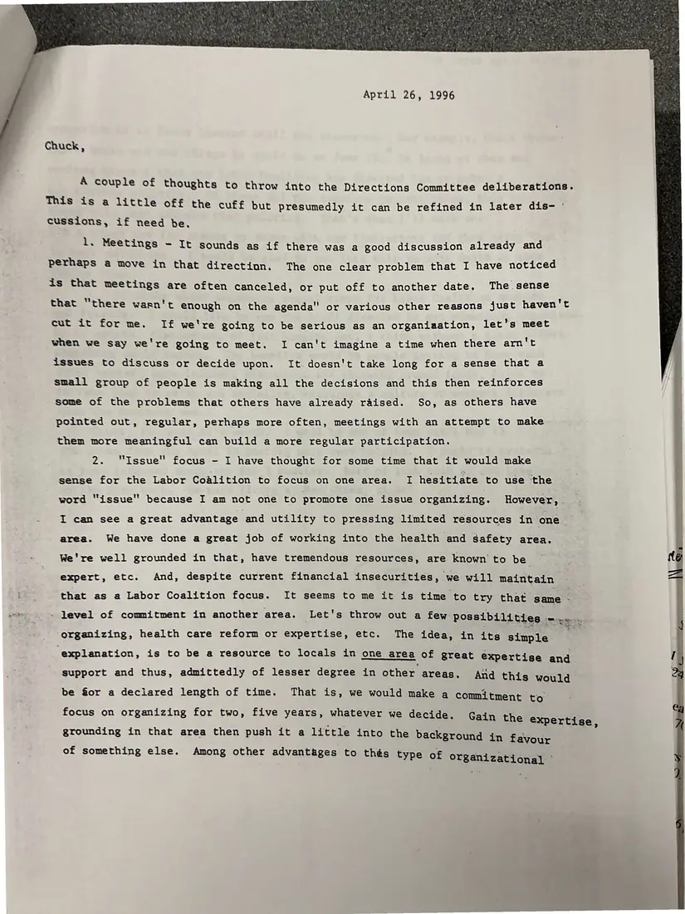
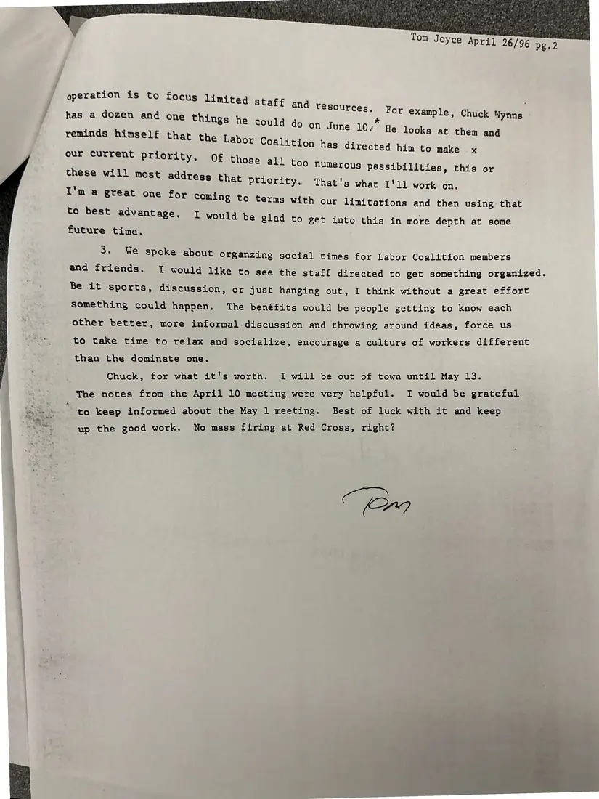

Letter, 2 pages
Tom Joyce to Chuck Wynns: thoughts for the Directions Committee
April 26, 1996
Painters Local 178's Tom Joyce suggests regular, more meaningful meetings, focusing on one issue area at a time (building on the council's health and safety strength), limited staff priorities, and social events to build a culture among members.
Download or cite this itemPages


(open zoom view)Read the page text (machine-read, mostly readable)
This text was generated automatically from the photograph and has not been corrected. The image is the authoritative record.
April 26, 1996 Chuck, A couple of thoughts to throw into the Directions Committee deliberations. This is a little off the cuff but presumedly it can be refined in later dis- cussions, if need be. 1, Meetings - It sounds as if there was a good discussion already and perhaps a move in that direction. The one clear problem that I have noticed is that meetings are often canceled, or put off to another date, The. sense that “there wasn't enough on the agenda" or various other reasons just haven't cut it for me. If we're going to be serious as an organiaation, let's meet when we say we're going to meet. I can't imagine a time when there arn't issues to discuss or decide upon. It doesn't take long for a sense that a small group of people is making all the decisions and this then reinforces some of the problems that others have already raised. So, as others have pointed out, regular, perhaps more often, meetings with an attempt to make them more meaningful can build a more regular participation. 2. "Issue" focus - I have thought for some time that it would make sense for the Labor Coalition to focus on one area. I hesitiate to use the word "issue" because I am not one to promote one issue organizing. However, I can see a great advantage and utility to pressing limited resources in one area. We have done a great job of working into the health and safety area. We're well grounded in that, have tremendous resources, are known to be expert, etc. And, despite current financial insecurities, we will maintain that as a Labor Coalition focus. It seems to me it is time to try that cane : - level of commitment in another area. Let's throw out a few possibilities -.. organizing, health care reform or expertise, etc. The idea, in its simple explanation, is to be a resource to locals in one area of great expertise and support and thus, admittedly of lesser degree in other areas. And this would That is, we would make a commitment to focus on organizing for two, five years, whatever we decide. be Sor a declared length of time. ce Gain the expertise, grounding in that area then push it a little into the background in favour of something else. Among other advantages to thés type of organizational hh!


(open zoom view)Read the page text (machine-read, mostly readable)
This text was generated automatically from the photograph and has not been corrected. The image is the authoritative record.
Tom Joyce April 26/96 aon 7 For ; has a dozen and one things he could Seren sine in, ‘ example, Chuck Wynns reminds h * He looks at them and imself that the Labor Coalition has directed him to mak our current priority, aes That's what I'1l work on. mM a great 8 one for coming to terms with our limitations and then using that to best advantage. I would be glad to get into this in more depth at some future time. 3. We spoke about organzing social times for Labor Coalition members and friends. I would like to see the staff directed to get something organized. Be it sports, discussion, or just hanging out, I think without a great effort something could happen. The benéfits would be people getting to know each other better, more informal discussion and throwing around ideas, force us to take time to relax and socialize, encourage a culture of workers different than the dominate one. Chuck, for what it's worth. I will be out of town until May 13. The notes from the April 10 meeting were very helpful. I would be grateful ’ to keep informed about the May 1 meeting. Best of luck with it and keep up the good work. No mass firing at Red Cross, right?
See something wrong, or recognize a person or event? Send a correction. If you hold rights in this item or think it should not be public, write to the same address.